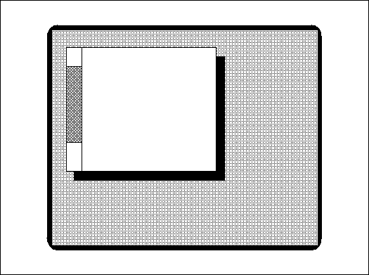
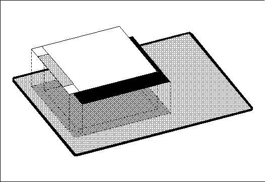
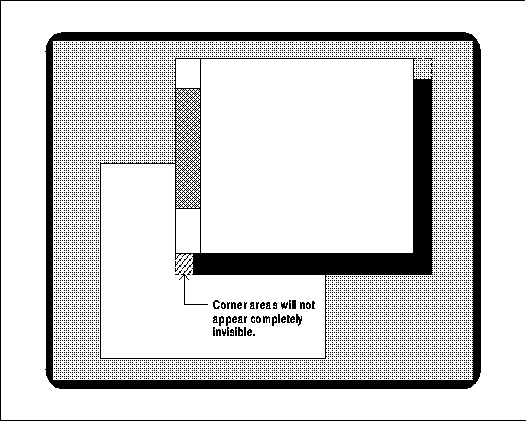
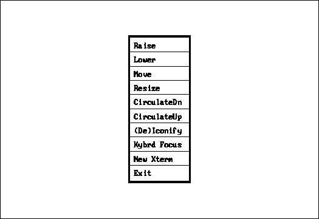
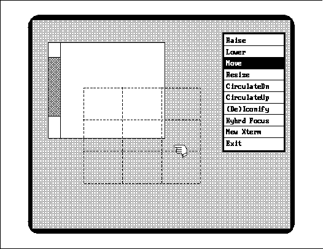

Xlib Programming Manual (O'Reilly & Associates, Inc.) |
A window manager is a program implemented with Xlib to control the layout of windows on the screen, responding to user requests to move, resize, raise, lower, or iconify windows. The window manager may also enforce a policy for window layout (such as mandating a standard window or icon size and placement) and provide a menu for commonly used shell commands.
This chapter is not primarily for window manager writers, as these are a rare breed. There are several good customizable window managers available, and there is very little reason for users or application writers to want to write their own. Only a few people in the X community are going to be actively involved in writing window managers, and chances are good they will already know all of what is described here. This chapter is presented for two reasons: so that application writers will get a better understanding of how to cooperate with the window manager, and so we can describe and demonstrate the Xlib routines that are provided mainly for the purpose of window management. As it turns out, the examples in this chapter also have elements (such as menus) that could be useful in ordinary applications as well.
We'll begin by describing the features and routines in Xlib that are provided mainly to give window managers the authority they need to control window layout and the flexibility to provide a good user interface. These features include the following:
Finally, we'll describe a simple window manager program.
You should find this program helpful not only in demonstrating window management
techniques but also for showing Xlib programming in a more complex setting
than basicwin in Chapter 3, "Basic Window Program," or basecalc
in Chapter 14, "A Complete Application." You should understand both those
programs before tackling this one.
The standard window managers uwm and twm do not have a window layout policy, but some existing window managers do. For example, the Siemens RTL Tiled window manager mandates that only temporary pop-up windows can overlap. That policy makes exposure a rare occurrence but makes resizing much more common. A second simpler example is the window manager designed by Stellar Computer for its high performance workstations. The Stellar window manager aligns icons along the top edge of the screen, along with the Stellar logo. Since the window manager creates the icons or is passed their IDs through hints, it can distinguish them from other windows on the screen.
Within its window layout policy, the window manager should honor the window size and position hints returned by XGetNormalHints() and XGetWMHints() as closely as possible (each application sets these hints). Under uwm and twm, the user selects the size of a newly created window by moving a flashing outline of a window. The size hints provided by the application determine the minimum dimensions, maximum dimensions, and desired increment for the window size, and these are indicated in the motion of the outline. For example, in both uwm and twm, the minimum size hints take priority over the user's input, so that the user cannot resize the window smaller than the minimum size.
Applications are free to resize or move the children of
their top-level windows as necessary. The window manager has no control
over these windows.
The structure, as the term is used here, is the location, size, stacking order, border width, and mapping status of a window. The substructure is all these statistics about the children of a particular window. This is the complete set of information about screen layout that the window manager might need in order to implement its policy. Redirection means that an event is sent to the client selecting redirection (usually the window manager), and the original structure-changing request is not executed.
The events that are selected by SubstructureRedirectMask and the routines that are intercepted are as follows:
Only one window manager at a time can select SubstructureRedirectMask or ResizeRedirectMask on a particular window.
ResizeRedirectMask also selects ConfigureRequest events when a client has called XConfigureWindow(), XMoveResizeWindow(), or XResizeWindow(). However, if any client has selected SubstructureRedirectMask on the parent of the window for which ResizeRedirectMask is selected, the SubstructureRedirectMask takes precedence.
Substructure redirect allows the window manager to separate
the portion of itself that moves and resizes windows from the portion that
enforces window policy. While the window reconfiguration section is driven
by user events, the policy section can be completely driven from the *Request
events that signal that the user has proposed a change to the window layout.
And since applications will only attempt to resize or move their top-level
windows in direct response to a user request, those requests are just as
valid as the ones from the window reconfiguration section of the window
manager.
To do this, the window manager creates a child of the root somewhat larger than the top-level window of the application. Then it calls XReparentWindow(), specifying the top-level window of the application as win and the new parent as parent. win and all its descendants will then be descendants of parent.
In the area where the new parent is visible around the top-level window of the application, the window manager can put anything it wants. This could include text, graphics, and small windows which perform certain functions when a button is clicked in them.
The window manager can decorate all top-level windows, but it will normally ignore windows that are mapped with their override_redirect attribute set, since no *Request events will be generated for them. The window manager may also decorate differently windows that have set the XA_WM_TRANSIENT_FOR property and apply its window layout policy to them. The window manager calls XGetTransientForHint() for each window to get this property.
By the way, it is impossible (except by luck) for the window manager to match the colors of the decoration to the colors of the window it is decorating. A window manager cannot find out what colors a window uses for its border or background because these window attributes cannot be queried.
Goal of background shadow

What happens if we try to accomplish the following style of background with two windows: one InputOutput window slightly larger in both dimensions than the application's top-level window, and one InputOutput shadow window the same size as the application window, offset into the corner of the InputOnly window? The larger window would have its background_pixmap attribute set to ParentRelative so that it looked invisible, and the smaller window would have its background set to black or gray to make the shadow. Figure 16-2 shows how the layers are lined up.
Window layering for background shadow

When the window with the shadow is moved around the screen when no other applications are on the screen, the shadow looks good. But when the window is moved over other applications, a strange thing happens. The background of the root window shows itself in the "invisible" corner of the shadow, as shown in Figure 16-3, later in this chapter.
Actual effect of shadow attempt

It turns out that a perfect shadow is not possible
without an extension, because the server clips regions of the screen in
rectangles, not in the complex shape required by a shadow. However,
if the shadow is only two pixels wide, this approach might look good enough.
The save-set is necessary because the window manager might not exit normally. The user might kill it with CTRL-C if it is running in the foreground, or more likely, the user might get the process number and kill it. Actually, the actions of the save-set are performed even if the window manager exits normally, so less code is needed since the save-set does the cleaning up.
Window managers almost always place in the save-set all the windows they reparent or iconify, using XAddToSaveSet().
Windows are automatically removed from the save-set when they are destroyed. If this were not the case, the window manager would have to monitor DestroyNotify events and explicitly remove the windows from the save-set.
The routines XRemoveFromSaveSet() and XChangeSaveSet()
are available, but they are not often needed even in window managers. XChangeSaveSet()
adds or removes a window from the save-set.
These hints allow the window manager to smooth the user interface so that all the applications running on the system appear integrated. Any good window manager will read most, if not all, of the properties described in this section and try to do with them what is most helpful to applications and users.
| Hint | Set (by Application) | Get (by Window Manager) |
|---|---|---|
| Window Name | XSetWMName() | XGetWMName() |
| Icon Name | XSetWMIconName() | XGetWMIconName() |
| Shell Command and Arguments | XSetCommand() | XGetCommand() |
| Icon Pixmap | XSetWMProperties() or XSetWMNormalHints() | XGetWMNormalHints() |
| Normal Size Hints | XSetWMNormalHints() | XGetWMNormalHints() |
| WM Hints | XSetWMHints() | XGetWMHints() |
| Transient Window | XSetTransientForHint() | XGetTransientForHint() |
| Class Hint | XSetClassHint() | XGetClassHint() |
| Client Machine | XSetWMClientMachine() | XGetWMClientMachine() |
| WM Protocols | XSetWMProtocols() | XGetWMProtocols() |
XConfigureWindow() is the most general routine for changing the configuration of a window, namely its size, position, border width, and stacking position.
The routines to move and resize windows are XMoveWindow(), XMoveResizeWindow(), and XResizeWindow(). The routine to change the border width of a window is XSetWindowBorderWidth().
Quite a variety of routines are provided to change the stacking order of windows. These operations affect only a single group of siblings. Furthermore, they affect only overlapping siblings. If any of the siblings specified do not overlap, their stacking order is not changed.
The stack_mode of the XConfigureWindow()
routine has five possible values: Above, Below, BottomIf,
TopIf, and Opposite. If the window is simultaneously being
moved or resized, this calculation is performed with respect to the window's
final size and position, not its initial position. If a sibling and a stack_mode
are specified, the window is restacked as described in Table 16-2.
| Window Stack Mode | Description |
|---|---|
| Above | Window is placed just above sibling. |
| Below | Window is placed just below sibling. |
| TopIf | If sibling obscures window, then window is placed at the top of the stack. |
| BottomIf | If window obscures sibling, then window is placed at the bottom of the stack. |
| Opposite | If any sibling occludes window, then window is placed at the top of the stack, else if window occludes any sibling, then window is placed at the bottom of the stack. |
If a stack_mode is specified but no sibling is
specified, the window is restacked as described in Table 16-3.
| Window Stack Mode | Description |
|---|---|
| Above | Window is placed at the top of the stack. |
| Below | Window is placed at the bottom of the stack. |
| TopIf | If any sibling obscures window, then window is placed at the top of the stack. |
| BottomIf | If window obscures any sibling, then window is placed at the bottom of the stack. |
| Opposite | If any sibling occludes window, then window is placed at the top of the stack, else if window occludes any sibling, then window is placed at the bottom of the stack. |
Another set of routines that are usually only used by
the window manager are the ones that grab and ungrab the server. XGrabServer()
and XUngrabServer() are used when a program requires total control
of the screen, so that output requests from other programs are queued but
not displayed. One application of grabbing is to draw temporary moving
objects on the screen, such as the outline of a window being moved. This
is called rubber-banding. The outline (or grid) is drawn with logical
function GXxor, which, when drawn twice, leaves the screen as it
was initially. If the server were not grabbed in between the first drawing
and the second of the same line, some other program might update the same
part of the display, resulting in glitches after the second drawing. This
server grab also speeds up the rubber-banding, because the server stops
performing updates to other windows.
The winman program also demonstrates some techniques that may be helpful in ordinary applications, such as how to implement a menu using Xlib. (Most applications will ultimately do this with a toolkit.)
If you have the example programs from O'Reilly and Associates, you can compile and run winman to see how it works (how to get this code is described in the Preface). Be sure to stop or kill any other window managers running before running winman. Both winman and the other window manager may get confused because they are not designed to cooperate with each other. The following explanations will be easier to follow if you have used the program.
The menu created by winman

The menu provides a number of basic functions for manipulating windows on the screen:
If CirculateDn, CirculateUp, or New Xterm is chosen, selection of a window is not necessary. The circulation operations act on all overlapping windows that are children of the root. The New Xterm choice simply creates a new xterm window.
If Raise, Lower, (De)Iconify or Kybrd Focus is chosen, the user must press a pointer button to select a window. (winman's own menu cannot be iconified, because this would make it impossible to recover the window manager menu.) Kybrd Focus sets the keyboard focus window and highlights that window with a white background behind the window.
If Move or Resize is chosen, the user must press a pointer button on the window to be manipulated, drag the pointer with the button held until the outline of the window is in the chosen size or position, and then release the button. (winman's own menu can be moved but not resized.) A moving outline of the window is used to indicate the intended dimensions or position of the window.
Instead of breaking up the code in little pieces as we have done in earlier examples, this time we'll show you main together in one place. By this point in the manual, you should know enough to understand most of this code. Any questions you may have should be answered by the description immediately following the code.
winman -- main C program
#include <X11/Xlib.h>
#include <X11/Xutil.h>
#include <X11/Xatom.h>
#include <X11/Xos.h>
#include <X11/cursorfont.h>
#include <stdio.h>
#include <signal.h>
#include "bitmaps/focus_frame_bi" /* Name must be <= 14 chars
* for sys V compatibility */
/* Include file for printing event types */
#include "eventnames.h"
#define MAX_CHOICE 10
#define DRAW 1
#define ERASE 0
#define RAISE 1
#define LOWER 0
#define MOVE 1
#define RESIZE 0
#define NONE 100
#define NOTDEFINED 0
#define BLACK 1
#define WHITE 0
Window focus_window;
Window inverted_pane = NONE;
static char *menu_label[] =
{
"Raise",
"Lower",
"Move",
"Resize",
"CirculateDn",
"CirculateUp",
"(De)Iconify",
"Kybrd Focus",
"New Xterm",
"Exit",
};
Display *display;
int screen_num;
XFontStruct *font_info;
char icon_name[50];
main()
{
Window menuwin;
Window panes[MAX_CHOICE];
int menu_width, menu_height, x = 0, y = 0, border_width = 4;
int winindex;
int cursor_shape;
Cursor cursor, hand_cursor;
char *font_name = "9x15";
int direction, ascent, descent;
int char_count;
char *string;
XCharStruct overall;
Bool owner_events;
int pointer_mode;
int keyboard_mode;
Window confine_to;
GC gc, rgc;
int pane_height;
Window assoc_win;
XEvent event;
unsigned int button;
if ( (display=XOpenDisplay(NULL)) == NULL ) {
(void) fprintf( stderr, "winman: cannot connect to \
X server %s\n", XDisplayName(NULL));
exit( -1 );
}
screen_num = DefaultScreen(display);
/* Access font */
font_info = XLoadQueryFont(display,font_name);
if (font_info == NULL) {
(void) fprintf( stderr, "winman: Cannot open font %s\n",
font_name);
exit( -1 );
}
string = menu_label[6];
char_count = strlen(string);
/* Determine the extent of each menu pane based on
* the font size */
XTextExtents(font_info, string, char_count, &direction, &ascent,
&descent, &overall);
menu_width = overall.width + 4;
pane_height = overall.ascent + overall.descent + 4;
menu_height = pane_height * MAX_CHOICE;
/* Place the window in upper-right corner*/
x = DisplayWidth(display,screen_num) - menu_width -
(2*border_width);
y = 0; /* Appears at top */
/* Create opaque window */
menuwin = XCreateSimpleWindow(display, RootWindow(display,
screen_num), x, y, menu_width, menu_height,
border_width, BlackPixel(display,screen_num),
WhitePixel(display,screen_num));
/* Create the choice windows for the text */
for (winindex = 0; winindex < MAX_CHOICE; winindex++) {
panes[winindex] = XCreateSimpleWindow(display, menuwin, 0,
menu_height/MAX_CHOICE*winindex, menu_width,
pane_height, border_width = 1,
BlackPixel(display,screen_num),
WhitePixel(display,screen_num));
XSelectInput(display, panes[winindex], ButtonPressMask
| ButtonReleaseMask | ExposureMask);
}
XSelectInput(display, RootWindow(display, screen_num),
SubstructureNotifyMask);
/* These do not appear until parent (menuwin) is mapped */
XMapSubwindows(display,menuwin);
/* Create the cursor for the menu */
cursor = XCreateFontCursor(display, XC_left_ptr);
hand_cursor = XCreateFontCursor(display, XC_hand2);
XDefineCursor(display, menuwin, cursor);
focus_window = RootWindow(display, screen_num);
/* Create two graphics contexts for inverting panes (white
* and black). We invert the panes by changing the background
* pixel, clearing the window, and using the GC with the
* contrasting color to redraw the text. Another way is using
* XCopyArea. The default is to generate GraphicsExpose and
* NoExpose events to indicate whether the source area was
* obscured. Since the logical function is GXinvert, the
* destination is also the source. Therefore, if other
* windows are obscuring parts of the exposed pane, the
* wrong area will be inverted. Therefore, we would need
* to handle GraphicsExpose and NoExpose events. We'll do
* it the easier way. */
gc = XCreateGC(display, RootWindow(display, screen_num), 0,
NULL);
XSetForeground(display, gc, BlackPixel(display, screen_num));
rgc = XCreateGC(display, RootWindow(display, screen_num), 0,
NULL);
XSetForeground(display, rgc, WhitePixel(display, screen_num));
/* Map the menu window (and its subwindows) to the screen_num */
XMapWindow(display, menuwin);
/* Force child processes to disinherit the TCP file descriptor;
* this helps the shell command (creating new xterm) forked and
* executed from the menu to work properly */
if ((fcntl(ConnectionNumber(display), F_SETFD, 1)) == -1)
fprintf(stderr, "winman: child cannot disinherit TCP fd");
/* Loop getting events on the menu window and icons */
while (1) {
/* Wait for an event */
XNextEvent(display, &event);
/* If expose, draw text in pane if it is pane */
switch (event.type) {
case Expose:
if (isIcon(event.xexpose.window, event.xexpose.x,
event.xexpose.y, &assoc_win, icon_name, False))
XDrawString(display, event.xexpose.window, gc, 2,
ascent + 2, icon_name, strlen(icon_name));
else { /* It's a pane, might be inverted */
if (inverted_pane == event.xexpose.window)
paint_pane(event.xexpose.window, panes, gc, rgc,
BLACK);
else
paint_pane(event.xexpose.window, panes, gc, rgc,
WHITE);
}
break;
case ButtonPress:
paint_pane(event.xbutton.window, panes, gc, rgc, BLACK);
button = event.xbutton.button;
inverted_pane = event.xbutton.window;
/* Get the matching ButtonRelease on same button */
while (1) {
/* Get rid of presses on other buttons */
while (XCheckTypedEvent(display, ButtonPress,
&event));
/* Wait for release; if on correct button, exit */
XMaskEvent(display, ButtonReleaseMask, &event);
if (event.xbutton.button == button)
break;
}
/* All events are sent to the grabbing window
* regardless of whether this is True or False;
* owner_events only affects the distribution
* of events when the pointer is within this
* application's windows */
owner_events = True;
/* We don't want pointer or keyboard events
* frozen in the server */
pointer_mode = GrabModeAsync;
keyboard_mode = GrabModeAsync;
/* We don't want to confine the cursor */
confine_to = None;
XGrabPointer(display, menuwin, owner_events,
ButtonPressMask | ButtonReleaseMask,
pointer_mode, keyboard_mode,
confine_to, hand_cursor, CurrentTime);
/* If press and release occurred in same window,
* do command; if not, do nothing */
if (inverted_pane == event.xbutton.window) {
/* Convert window ID to window array index */
for (winindex = 0; inverted_pane !=
panes[winindex]; winindex++)
;
switch (winindex) {
case 0:
raise_lower(menuwin, RAISE);
break;
case 1:
raise_lower(menuwin, LOWER);
break;
case 2:
move_resize(menuwin, hand_cursor, MOVE);
break;
case 3:
move_resize(menuwin, hand_cursor, RESIZE);
break;
case 4:
circup(menuwin);
break;
case 5:
circdn(menuwin);
break;
case 6:
iconify(menuwin);
break;
case 7:
focus_window = focus(menuwin);
break;
case 8:
execute("xterm&");
break;
case 9: /* Exit */
XSetInputFocus(display,
RootWindow(display,screen_num),
RevertToPointerRoot,
CurrentTime);
/* Turn all icons back into windows */
/* Must clear focus highlights */
XClearWindow(display, RootWindow(display,
screen_num));
/* Need to change focus border width back here */
XFlush(display);
XCloseDisplay(display);
exit(1);
default:
(void) fprintf(stderr,
"Something went wrong\n");
break;
} /* End switch */
} /* End if */
/* Invert Back Here (logical function is invert) */
paint_pane(event.xexpose.window, panes, gc, rgc, WHITE);
inverted_pane = NONE;
draw_focus_frame();
XUngrabPointer(display, CurrentTime);
XFlush(display);
break;
case DestroyNotify:
/* Window we have iconified has died, remove its
* icon; don't need to remove window from save-set
* because that is done automatically */
removeIcon(event.xdestroywindow.window);
break;
case CirculateNotify:
case ConfigureNotify:
case UnmapNotify:
/* All these uncover areas of screen_num */
draw_focus_frame();
break;
case CreateNotify:
case GravityNotify:
case MapNotify:
case ReparentNotify:
/* Don't need these, but get them anyway since
* we need DestroyNotify and UnmapNotify */
break;
case ButtonRelease:
/* Throw these way, they are spurious here */
break;
case MotionNotify:
/* Throw these way, they are spurious here */
break;
default:
fprintf(stderr, "winman: got unexpected %s event.\n",
event_names[event.type]);
} /* End switch */
} /* End menu loop (while) */
} /* End main */
The menu is created by superimposing ten small InputOutput child windows (defs[]) on one large InputOutput parent window (menuwin), as shown in Figure 16-5. This has the advantage that there is a single parent window for the window manager, which we can use to locate the panes of the menu and to identify the menu as a whole. You can also assign a cursor to the larger window, and since the smaller windows are its children, the same cursor appears in all of them. This avoids nine cursor assignments.
The nine smaller windows do three other convenient things; their borders make a neat division between areas of the menu, they determine which area of the menu the user chooses, and they define a convenient area to invert from black on white to white on black to indicate which menu choice was made.
Window layering for the menu

Some of the other events selected by SubstructureNotifyMask also come in handy for triggering the redrawing of the highlighting background drawn around the focus window by winman. This background is drawn on the root window and might have to be redrawn whenever a new area of the root window becomes exposed. It has to be redrawn when CirculateNotify, ConfigureNotify, or UnmapNotify events arrive. This could also have been done by selecting Expose events on the root window, but since we have already selected these other events and they will be sent from the server to Xlib anyway, it improves performance slightly to use them instead of Expose events on the root window.
Using event-getting routines together
/* Get the matching ButtonRelease on same button */
while (1) {
/* Get rid of all presses (on other buttons) */
while (XCheckTypedEvent(display, ButtonPress,
&event))
;
/* Wait for release; if on correct button, exit *
XMaskEvent(display, ButtonReleaseMask, &event);
if (event.xbutton.button == button) {
/* Get rid of other releases */
while (XCheckTypedEvent(display, ButtonRelease,
&event))
;
break;
}
}
Here we have already read a ButtonPress event and
are waiting for a ButtonRelease on the same button. This cannot
be done with XMaskEvent() alone, because we might get a ButtonRelease
on a different button first and there is no way to select or get only the
button events on a single button (except by writing a predicate procedure
as shown in Example 8-6). Therefore, XMaskEvent() is called in a
loop, and the button member in each event must be checked. Furthermore,
the CheckTypedEvent calls are necessary to make sure that Xlib's
queue does not fill up with ButtonPress or ButtonRelease
events that are not wanted, since the code is really waiting for a particular
button release. XCheckTypedEvent() is used again in the routine
that actually moves or resizes a window to throw away excess MotionNotify
events.
The Expose event processing in main redraws winman's menu only when the count field in the Expose event is zero, thus responding only to the last Expose event in a contiguous series on a single window. Remember that any of the menu panes or any icon can receive Expose events. We also minimize redrawing by redrawing only the panes that are exposed.
One is to use XCopyArea() to copy the pane to itself using GXinvert as the logical function in the GC. This approach is weak because GXinvert would not achieve the desired effect on a color system, even though it would work fine on a monochrome system.
The second strategy, adopted in main, is to change the background pixel value of the window and change the foreground pixel value in the GC to draw the text in a contrasting color. In winman, the colors are black and white, but this approach will work correctly with any two contrasting colors.
The third approach would be to use XDrawImageString() to draw the text. XDrawImageString() draws a complete rectangle, with the text in the foreground pixel value from the GC and the rest of the rectangle in the background pixel value. If this rectangle were the same size as the menu pane, the entire pane could be inverted in color simply by swapping the foreground and background pixel values in the GC. The one weakness of this approach is that the rectangle drawn by XDrawImageString() might not leave as much space around the text as you would like. However, this is a very fast approach, useful in menus and for the selection of text, which works in both monochrome and color.
The fourth approach involves a trick using colors allocated by XAllocColorCells(). It is possible to allocate colors so that the two contrasting colors in the drawable are swapped by setting to 1 or 0 all the bits in a plane of the drawable. In this technique, the text does not need drawing at all for highlighting, because the plane on which the text is drawn is not modified by the operation to set or clear the bits in the other plane. You would need to allocate four colorcells, two of which contained the foreground RGB values and two the background. This would not work on a monochrome system, since you could not allocate four colorcells. This technique is described in Section 7.5.2, "Allocating Read/Write Colorcells for Overlays."
The arguments of XGrabPointer() can be confusing. The owner_events argument affects the distribution of events when the pointer is within this application's windows. Therefore, it does not affect our application, because we are using the grab to get input from outside the menu windows. The pointer_mode and keyboard_mode arguments also do not apply to the job at hand, so they are set to GrabModeAsync, which does not affect the processing of events. Their other settings cause events to be held in the server until a releasing XAllowEvents() call. Finally, the confine_to argument also does not fit our job, because we want the pointer to be able to roam around the screen rather than be confined to a window.
That about wraps up the new techniques used in main that have not been used earlier in this manual. Now we'll move on to some of the routines that main calls, beginning with paint_pane.
Each call of this routine draws the text in one choice window. The first operation compares the window ID from the event with the IDs in the panes array to determine which string from the menu_label array to use.
Window backgrounds are automatically redrawn by the server when exposure occurs. But paint_pane is not always called in response to Expose events; it is also used to invert the pane when a choice is made. Therefore, the request buffer will not necessarily be flushed before the next call to draw the area. Therefore, an XClearWindow() call is necessary to redraw the background. (A completely different strategy could have been used. The background could be filled with XFillRectangle() instead of using the server.)
winman -- the paint_pane routine
static char *menu_label[] = {
"Raise",
"Lower",
"Move",
"Resize",
"CirculateDn",
"CirculateUp",
"(De)Iconify",
"Kybrd Focus",
"New Xterm",
"Exit",
};
paint_pane(window, panes, ngc, rgc, mode)
Window window;
Window panes[];
GC ngc, rgc;
int mode;
{
int win;
int x = 2, y;
GC gc;
if (mode == BLACK) {
XSetWindowBackground(display, window, BlackPixel(display,
screen_num));
gc = rgc;
}
else {
XSetWindowBackground(display, window, WhitePixel(display,
screen_num));
gc = ngc;
}
/* Clearing repaints the background */
XClearWindow(display, window);
/* Find out index of window for label text */
for (win = 0; window != panes[win]; win++)
;
y = font_info->max_bounds.ascent;
/* The string length is necessary because strings
* for XDrawString may not be null terminated */
XDrawString(display, window, gc, x, y, menu_label[win],
strlen( menu_label[win]));
}
winman -- the circle up and circle down routines
circup(menuwin)
Window menuwin;
{
XCirculateSubwindowsUp(display, RootWindow(display,screen_num));
XRaiseWindow(display, menuwin);
}
circdn(menuwin)
Window menuwin;
{
XCirculateSubwindowsDown(display, RootWindow(display,screen_num));
XRaiseWindow(display, menuwin);
}
The XQueryPointer() call is used to get the window ID of the window that the button is pressed in. This call is necessary because the program did not create or select input on the windows that it is going to manipulate.
winman -- the raise and lower routines
raise_lower( menuwin, raise_or_lower )
Window menuwin;
Bool raise_or_lower;
{
XEvent report;
int root_x,root_y;
Window child, root;
int win_x, win_y;
unsigned int mask;
unsigned int button;
/* Wait for ButtonPress, find out which subwindow of root */
XMaskEvent(display, ButtonPressMask, &report);
button = report.xbutton.button;
XQueryPointer(display, RootWindow(display,screen_num), &root,
&child, &root_x, &root_y, &win_x, &win_y,
&mask);
/* If not RootWindow, raise */
if (child != NULL) {
if (raise_or_lower == RAISE)
XRaiseWindow(display, child);
else
XLowerWindow(display, child);
/* Make sure window manager can never be obscured */
XRaiseWindow(display, menuwin);
}
/* Get the matching ButtonRelease on same button */
while (1) {
XMaskEvent(display, ButtonReleaseMask, &report);
if (report.xbutton.button == button) break;
}
/* Throw out any remaining events so we start fresh */
while (XCheckMaskEvent(display, ButtonReleaseMask |
ButtonPressMask, &report))
;
}
The routine that draws the box for the temporary window outline was described in Chapter 6, "Drawing Graphics and Text."
If there is an icon associated with the moved window, that icon is not moved. Similarly, if the window moved is an icon, its associated main window is not moved. This is an arbitrary window manager policy decision. Some window managers might legislate a certain relationship between the position of a window and its icon.
winman -- the move and resize routines
move_resize(menuwin, hand_cursor, move_or_resize)
Window menuwin;
Cursor hand_cursor;
Bool move_or_resize;
{
XEvent report;
XWindowAttributes win_attr;
int press_x, press_y, release_x, release_y, move_x, move_y;
static int box_drawn = False;
int left, right, top, bottom;
Window root, child;
Window win_to_configure;
int win_x, win_y;
unsigned int mask;
unsigned int pressed_button;
XSizeHints size_hints;
Bool min_size, increment;
unsigned int width, height;
int temp_size;
static GC gc;
static int first_time = True;
long user_supplied_mask;
if (first_time) {
gc = XCreateGC(display, RootWindow(display,screen_num), 0,
NULL);
XSetSubwindowMode(display, gc, IncludeInferiors);
XSetForeground(display, gc, BlackPixel(display, screen_num));
XSetFunction(display, gc, GXxor);
first_time = False;
}
/* Wait for ButtonPress choosing window to configure */
XMaskEvent(display, ButtonPressMask, &report);
pressed_button = report.xbutton.button;
/* Which child of root was press in? */
XQueryPointer(display, RootWindow(display,screen_num), &root,
&child, &press_x, &press_y, &win_x,
&win_y, &mask);
win_to_configure = child;
if ((win_to_configure == NULL) ||
((win_to_configure == menuwin)
&& (move_or_resize == RESIZE))) {
/* If in RootWindow or resizing menuwin,
* get release event and get out */
while (XCheckMaskEvent(display, ButtonReleaseMask |
ButtonPressMask, &report))
;
return;
}
/* Button press was in a valid subwindow of root */
/* Get original position and size of window */
XGetWindowAttributes(display, win_to_configure,
&win_attr);
/* Get size hints for the window */
XGetWMNormalHints(display, win_to_configure, &size_hints,
&user_supplied_mask);
if (size_hints.flags && PMinSize)
min_size = True;
if (size_hints.flags && PResizeInc)
increment = True;
/* Now we need pointer motion events */
XChangeActivePointerGrab(display, PointerMotionHintMask |
ButtonMotionMask | ButtonReleaseMask |
OwnerGrabButtonMask, hand_cursor, CurrentTime);
/* Don't allow other display operations during move
* because the moving outline drawn with Xor won't
* work properly otherwise */
XGrabServer(display);
/* Move outline of window until button release */
while (1) {
XNextEvent(display, &report);
switch (report.type) {
case ButtonRelease:
if (report.xbutton.button == pressed_button) {
if (box_drawn)
/* Undraw box */
draw_box(gc, left, top, right, bottom);
/* This may seem premature but actually
* ButtonRelease indicates that the
* rubber-banding is done */
XUngrabServer(display);
/* Get final window position */
XQueryPointer(display, RootWindow(display,
screen_num), &root, &child,
&release_x, &release_y, &win_x,
&win_y, &mask);
/* Move or resize window */
if (move_or_resize == MOVE)
XMoveWindow(display, win_to_configure,
win_attr.x + (release_x -
press_x), win_attr.y +
(release_y - press_y));
else
XResizeWindow(display, win_to_configure,
win_attr.width + (release_x - press_x),
win_attr.height + (release_y - press_y));
XRaiseWindow(display, win_to_configure);
XFlush(display);
box_drawn = False;
while (XCheckMaskEvent(display,
ButtonReleaseMask
| ButtonPressMask,
&report))
;
return;
}
break;
case MotionNotify:
if (box_drawn == True)
/* Undraw box */
draw_box(gc, left, top, right, bottom);
/* Can get rid of all MotionNotify events in
* queue, since otherwise the round-trip delays
* caused by XQueryPointer may cause a backlog
* of MotionNotify events, which will cause
* additional wasted XQueryPointer calls */
while (XCheckTypedEvent(display, MotionNotify,
&report));
/* Get current mouse position */
XQueryPointer(display, RootWindow(display,
screen_num), &root, &child, &move_x,
&move_y, &win_x, &win_y, &mask);
if (move_or_resize == MOVE) {
left = move_x - press_x + win_attr.x;
top = move_y - press_y + win_attr.y;
right = left + win_attr.width;
bottom = top + win_attr.height;
}
else
{
if (move_x < win_attr.x)
move_x = 0;
if (move_y < win_attr.y )
move_y = 0;
left = win_attr.x;
top = win_attr.y;
right = left + win_attr.width + move_x
- press_x;
bottom = top + win_attr.height + move_y
- press_y;
/* Must adjust size according to size hints */
/* Enforce minimum dimensions */
width = right - left;
height = bottom - top;
/* Make sure dimension are increment of
* width_inc and height_inc and at least
* min_width and min_height */
for (temp_size = size_hints.min_width;
temp_size < width;
temp_size += size_hints.width_inc)
;
for (temp_size = size_hints.min_height;
temp_size < height;
temp_size += size_hints.height_inc)
;
/* Most applications (xterm
* included) pad their right
* and bottom dimensions by
* 2 pixels */
bottom = top + temp_size + 2;
right = left + temp_size + 2;
}
draw_box(gc, left, top, right, bottom);
box_drawn = True;
break;
default:
/* StructureNotify events should not appear
* here because of the ChangeActivePointerGrab
* call, but they do for some reason; anyway,
* it doesn't matter */
/* fprintf(stderr, "unexpected event type %s\n",
* report.type); */
;
} /* End switch */
} /* End outer while */
} /* End move */
Figure 16-6 shows an example of the screen during a move
operation.
Dragging a window outline

The XChangeActivePointerGrab() function is used to narrow the types of events that are received. In other terms, it changes the events that are selected for the window for the duration of the grab. This makes it unnecessary to throw away ButtonPress events that are used early in the program but not needed in this routine.
The server is grabbed in this example to make sure that no other program displays output on the screen while the box is being dragged. This is necessary because the box is drawn and then undrawn with the same command and GC using the GXxor logical function. Graphics drawn twice with Exclusive OR will appear as they started but only if the pixels affected are not changed by any other application in between. If any other client were allowed to draw between the draw and the undraw, the screen might not be returned to normal.
Note that the actual color of the rubber-banded line is unpredictable on a color system, because the pixel value is simply the Exclusive OR of what was already there. If a particular color of rubber-banded line is desired, you will have to use the overlay technique described in Section 7.5.2, "Allocating Read/Write Colorcells for Overlays."
The draw_box routine
Display *display;
int screen;
draw_box(gc, x, y, width, height)
GC gc;
int x, y,
unsigned int width, height;
{
/* Set foreground pixel value -- default may be white on white */
XSetForeground(display, gc, BlackPixel(display,screen));
/* Drawing on root window -- through all windows */
XSetSubwindowMode(display, gc, IncludeInferiors);
/* Logical function is XOR, so that double drawing erases box
* on both color and monochrome screens */
XSetFunction(display, gc, GXxor);
XDrawRectangle(display, RootWindow(display,screen), gc, x, y,
width, height);
}
This routine uses a couple of tricks that need explanation.
Notice that three elements of the GC are changed and that the drawing request
draws on the root window. Since the box may be moved anywhere on the screen
during a move operation (by the window manager), the box must be drawn
on the root window. We set the foreground color to black so that the box
will be visible over the default backgrounds of most windows (white). By
default, the subwindow_mode member is set to ClipByChildren,
specifying that graphics drawn to a window do not show through child windows.
Because we want the entire box to be visible anywhere on the screen, we
set the subwindow_mode to IncludeInferiors.
We are using a logical operation of GXxor so that the box can be drawn again to erase itself. This logical operation has the unique feature of returning the pixels to their original state in monochrome or color if the box is drawn twice, as long as none of the pixels were changed between the first and second drawings. To make sure nothing else is drawn in between, the program that calls draw_box grabs the server for the brief period of the window manipulation. Avoid grabbing the server unless absolutely necessary.
Example 16-8 shows the iconify routine that is called in response to the user selecting the (De)Iconify item on winman's menu.
winman -- the iconify routine
iconify(menuwin)
Window menuwin;
{
XEvent report;
extern Window focus_window;
Window assoc_win;
int press_x,press_y;
Window child;
Window root;
int win_x, win_y;
unsigned int mask;
unsigned int button;
/* Wait for ButtonPress, any win */
XMaskEvent(display, ButtonPressMask, &report);
button = report.xbutton.button;
/* Find out which subwindow the mouse was in */
XQueryPointer(display, RootWindow(display,screen_num), &root,
&child, &press_x, &press_y, &win_x, &win_y, &mask);
/* Can't iconify rootwindow or menu window */
if ((child == NULL) || (child == menuwin))
{
/* Wait for ButtonRelease before exiting */
while (1) {
XMaskEvent(display, ButtonReleaseMask, &report);
if (report.xbutton.button == button) break;
}
return;
}
/* Returned value of isIcon not used here, but
* it is elsewhere in the code */
isIcon(child, press_x, press_y, &assoc_win, icon_name, True);
/* Window selected is unmapped, whether it is icon
* or main window; the other is then mapped */
XUnmapWindow(display, child);
XMapWindow(display, *assoc_win);
/* Wait for ButtonRelease before exiting */
/* Get the matching ButtonRelease on same button */
while (1) {
XMaskEvent(display, ButtonReleaseMask, &report);
if (report.xbutton.button == button) break;
}
/* Throw out any remaining events so we start fresh
* for next op */
while (XCheckMaskEvent(display, ButtonReleaseMask |
ButtonPressMask, &report))
;
}
If the window is not an icon, the window is unmapped and
an icon window is created and mapped. If the window is an icon, it is unmapped
and the associated main window is remapped. The iconify routine
guards against iconifying the menu, since there is no way in this program
to undo that operation.
The iconify routine calls the isIcon routine. If the window selected is not an icon, isIcon creates an icon window, enters it into a linked list, and returns the icon window's ID. If the window selected is an icon, the associated main window's ID is returned. Either way, the window selected is unmapped and the associated window is mapped.
The routines underlying isIcon are a simplified version of the icon-handling code from uwm. Notice that these routines are in a separate source file, so they must include the standard include files and declare as extern the global variables set in winman.c.
winman -- the isIcon routine
#include <X11/Xlib.h>
#include <X11/Xatom.h>
#include <X11/Xutil.h>
#include <X11/cursorfont.h>
#include <stdio.h>
extern Display *display;
extern int screen_num;
/* For linked list containing window ID, icon ID, and icon_name;
* own indicates whether winman created the icon window (True)
* or was passed it through the WMHints (False) */
typedef struct _windowList {
struct _windowList *next;
Window window;
Window icon;
Bool own;
char *icon_name;
} WindowListRec, *WindowList;
WindowList Icons = NULL;
Bool isIcon(win, x, y, assoc, icon_name, makeicon)
Window win;
int x, y;
Window *assoc;
char *icon_name;
Bool makeicon;
{
WindowList win_list;
Window makeIcon();
/* Go through linked list of window-icon structures */
for (win_list = Icons; win_list; win_list = win_list->next) {
if (win == win_list->icon) { /* Win is icon */
*assoc = win_list->window;
strcpy(icon_name, win_list->icon_name);
return(True);
}
if (win == win_list->window) { /* Win is main window */
*assoc = win_list->icon;
strcpy(icon_name, win_list->icon_name);
return(False);
}
}
/* Window not in list means icon not created yet; create icon
* and add main window to save-set in case window manager dies */
if (makeicon) {
*assoc = makeIcon(win, x, y, icon_name);
XAddToSaveSet(display, win);
}
return(False);
}
The isIcon routine looks through the linked list of
structures, of which there is one for each top-level window that has ever
been iconified.
If some or all of these hints are not set, winman does the best it can. If no icon window is specified, winman creates one. If no icon pixmap is specified, winman uses a white background and writes the icon name on it in black.
winman -- the makeIcon routine
Window makeIcon(window, x, y, icon_name_return)
Window window; /* Associated window */
int x, y; /* Current mouse position */
char *icon_name_return;
{
int icon_x, icon_y; /* Icon U. L. X and Y
* coordinates */
int icon_w, icon_h; /* Icon width and height */
int icon_bdr; /* Icon border width */
int depth; /* For XGetGeometry */
Window root; /* For XGetGeometry */
XSetWindowAttributes icon_attrib; /* For icon creation */
unsigned long icon_attrib_mask;
XWMHints *wmhints; /* See if icon position
* provided */
XWMHints *XGetWMHints();
Window FinishIcon();
char *icon_name;
/* Process window manager hints. If icon window hint
* exists, use it directly. If icon pixmap hint exists,
* get its size. Otherwise, get default size. If icon
* position hint exists, use it; otherwise, use the
* position passed (current mouse position). */
if (wmhints = XGetWMHints(display, window)) {
if (wmhints->flags&IconWindowHint)
/* Icon window was passed; use it as is */
return(finishIcon(window, wmhints->icon_window,
False, icon_name));
else if (wmhints->flags&IconPixmapHint)
{
/* Pixmap was passed. Determine size of icon
* window from pixmap. Only icon_w and icon_h
* are significant. */
if (!XGetGeometry(display, wmhints->icon_pixmap,
&root, &icon_x, &icon_y,
&icon_w, &icon_h, &icon_bdr, &depth)) {
fprintf(stderr, "winman: client passed invalid \
icon pixmap." );
return( NULL );
}
else {
icon_attrib.background_pixmap = wmhints->icon_pixmap;
icon_attrib_mask = CWBorderPixel|CWBackPixmap;
}
}
/* Else no window or pixmap passed */
else {
icon_name = getDefaultIconSize(window, &icon_w, &icon_h);
icon_attrib_mask = CWBorderPixel | CWBackPixel;
icon_attrib.background_pixel = (unsigned long)
WhitePixel(display,screen_num);
}
}
/* Else no hints at all exist */
else {
icon_name = getDefaultIconSize(window, &icon_w, &icon_h);
icon_attrib_mask = CWBorderPixel | CWBackPixel;
}
/* Pad sizes */
icon_w += 2;
icon_h += 2;
strcpy(icon_name_return, icon_name);
/* Set the icon border attributes */
icon_bdr = 2;
icon_attrib.border_pixel = (unsigned long)
BlackPixel(display,screen_num);
/* If icon position hint exists, get it; this also checks
* to see if wmhints is NULL, which it will be if WMHints
* were never set at all */
if (wmhints && (wmhints->flags&IconPositionHint))
{
icon_x = wmhints->icon_x;
icon_y = wmhints->icon_y;
}
else
{
/* Put it where the mouse was */
icon_x = x;
icon_y = y;
}
/* Create the icon window */
return(finishIcon(window, XCreateWindow(display,
RootWindow(display, screen_num),
icon_x, icon_y, icon_w, icon_h,
icon_bdr, 0, CopyFromParent, CopyFromParent,
icon_attrib_mask, &icon_attrib),
True, icon_name));
}
winman -- the getDefaultIconSize and getIconName routines
char *
getDefaultIconSize(window, icon_w, icon_h)
Window window;
int *icon_w, *icon_h;
{
/* Determine the size of the icon window */
char *icon_name;
icon_name = getIconName(window);
*icon_h = font_info->ascent + font_info->descent + 4;
*icon_w = XTextWidth(font_info, icon_name, strlen(icon_name));
return(icon_name);
}
char *
getIconName(window)
Window window;
{
char *name;
if (XGetIconName( display, window, &name )) return( name );
/* Get program name if set */
if (XFetchName( display, window, &name )) return( name );
return( "Icon" );
}
The routines in Example 16-11 simply get the icon name and
determine a size for the icon from the name, given the font dimensions.
If no icon name is available, they use the program name, and if that is
not available, they use the string "Icon." However, this should never happen
if the applications are written properly.
winman -- the finishIcon routine
Window finishIcon(window, icon, own, icon_name)
Window window, icon;
Bool own; /* Whether winman created the icon window */
char *icon_name;
{
WindowList win_list;
Cursor manCursor;
/* If icon window didn't get created, return failure */
if (icon == NULL) return(NULL);
/* Use the man cursor whenever the mouse is in the
* icon window */
manCursor = XCreateFontCursor(display, XC_man);
XDefineCursor(display, icon, manCursor);
/* Select events for the icon window */
XSelectInput(display, icon, ExposureMask);
/* Set the event window's icon window to be the new
* icon window */
win_list = (WindowList) malloc(sizeof(WindowListRec));
win_list->window = window;
win_list->icon = icon;
win_list->own = own;
win_list->icon_name = icon_name;
win_list->next = Icons;
Icons = win_list;
return(icon);
}
One nice user interface possibility is suggested by the code
for finishIcon. We could let the user turn an icon back into a main
window by pressing some key or button in the icon. To do this, we would
select button or key events on the icon and then look for them in one of
the event loops in main. If button events were chosen, we would
need to identify which window the button event appeared in to distinguish
between events from the menu and events in the icon, but this would be
easy.
winman -- the removeIcon routine
removeIcon(window)
Window window;
{
WindowList win_list, win_list1;
for (win_list = Icons; win_list; win_list = win_list->next)
if (win_list->window == window) {
if (win_list->own)
XDestroyWindow(display, win_list->icon);
break;
}
if (win_list) {
if (win_list==Icons) Icons = Icons->next;
else
for (win_list1 = Icons; win_list1->next;
win_list1 = win_list1->next)
if (win_list1->next == win_list) {
win_list1->next = win_list->next;
break;
};
}
}
Whether winman exits graciously (through the Exit
choice on the menu) or by being killed, all the main windows it has iconified
have already been placed in the save-set, so that they will automatically
be mapped. Therefore, no routine to clear the icons is necessary.
winman highlights the focus window by increasing the width of the border and drawing a white outline around the window. This is necessary because it would not be obvious which application had the focus unless the application itself was programmed to indicate when it has the focus. Of course, applying the keyboard focus to a window that does not use keyboard input, like the main window of xclock, would cause your input to be just thrown away and the only indication of what is happening would be the highlighting drawn around the focus window.
The focus routine in Example 16-14 selects a window much like the raise_lower function does. If the subwindow returned by XQueryPointer() is NULL, the pointer must be on the root window, and the focus can be set to the ID of the root window. Otherwise we need to find out if the subwindow is an icon. The focus should be on the real window as opposed to the icon, since the icon is controlled by the window manager and does not accept keyboard input for the application.
To change the border width of the new focus window, we need to get the old width with XGetWindowAttributes(), and save it so it can be replaced when the focus is changed again.
winman -- the focus routine
focus(menuwin)
Window menuwin;
{
XEvent report;
int x,y;
Window child;
Window root;
Window assoc_win;
extern Window focus_window;
int win_x, win_y;
unsigned int mask;
char *icon_name;
unsigned int button;
XWindowAttributes win_attr;
static int old_width;
static Window old_focus;
int status;
/* Wait for ButtonPress, any win */
XMaskEvent(display, ButtonPressMask, &report);
button = report.xbutton.button;
/* Find out which subwindow the mouse was in */
XQueryPointer(display, RootWindow(display,screen_num), &root,
&child, &x, &y, &win_x, &win_y, &mask);
if ((child == NULL) || (isIcon(child, x, y, &assoc_win,
&icon_name)))
focus_window = RootWindow(display, screen_num);
else
focus_window = child;
if (focus_window != old_focus) { /* If focus changed */
/* If not first time set, set border back */
if (old_focus != NULL)
XSetWindowBorderWidth(display, old_focus, old_width);
XSetInputFocus(display, focus_window, RevertToPointerRoot,
CurrentTime);
if (focus_window != RootWindow(display, screen_num)) {
/* Get current border width and add one */
if (!(status = XGetWindowAttributes(display,
focus_window, &win_attr)))
fprintf(stderr, "winman: can't get attributes for \
focus window\n");
XSetWindowBorderWidth(display, focus_window,
win_attr.border_width + 1);
/* Keep record so we can change it back */
old_width = win_attr.border_width;
}
}
/* Get the matching ButtonRelease on same button */
while (1) {
XMaskEvent(display, ButtonReleaseMask, &report);
if (report.xbutton.button == button) break;
}
old_focus = focus_window;
return(focus_window);
}
A third and more complicated way is to reparent the focus window into a background frame, as described above in Section 16.3, "Reparenting." This would work well if the windows already had been reparented to add a titlebar.
The draw_focus_frame routine shown in Example 16-15 also demonstrates the two-step process of creating a useful pixmap from the data in an include file generated by the bitmap program. You must create a bitmap from the data before making a pixmap from the bitmap.
winman -- the draw_focus_frame routine
draw_focus_frame()
{
XWindowAttributes win_attr;
int frame_width = 4;
Pixmap focus_tile;
GC gc;
int foreground = BlackPixel(display, screen_num);
int background = WhitePixel(display, screen_num);
extern Window focus_window;
Bool first_time = True;
if (first_time) {
/* Make Bitmap from bitmap data */
focus_tile = XCreatePixmapFromBitmapData(display,
RootWindow(display,screen_num),
focus_frame_bi_bits, focus_frame_bi_width,
focus_frame_bi_height, foreground,
background, DefaultDepth(display, screen_num));
/* Create graphics context */
gc = XCreateGC(display, RootWindow(display,screen_num), 0,
NULL);
XSetFillStyle(display, gc, FillTiled);
XSetTile(display, gc, focus_tile);
first_time = False;
}
/* Get rid of old frames */
XClearWindow(display, RootWindow(display,screen_num));
/* If focus is RootWindow, no frame drawn */
if (focus_window == RootWindow(display,screen_num)) return;
/* Get dimensions and position of focus_window*/
XGetWindowAttributes(display, focus_window, &win_attr);
XFillRectangle(display, RootWindow(display,screen_num), gc,
win_attr.x - frame_width, win_attr.y - frame_width,
win_attr.width + 2 * (win_attr.border_width + frame_width),
win_attr.height + 2 * (win_attr.border_width + frame_width));
}
winman -- the execute routine
#ifdef SYSV
#ifndef hpux
#define vfork() fork()
#endif /* hpux */
#endif /* SYSV */
/* The following procedure is a copy of the implementation of
* system, modified to reset the handling of SIGINT, SIGQUIT,
* and SIGHUP before executing */
execute(s)
char *s;
{
int status, pid, w;
register int (*istat)(), (*qstat)();
if ((pid = vfork()) == 0) {
signal(SIGINT, SIG_DFL);
signal(SIGQUIT, SIG_DFL);
signal(SIGHUP, SIG_DFL);
execl("/bin/sh", "sh", "-c", s, 0);
_exit(127);
}
istat = signal(SIGINT, SIG_IGN);
qstat = signal(SIGQUIT, SIG_IGN);
while ((w = wait(&status)) != pid && w != -1)
;
if (w == -1)
status = -1;
signal(SIGINT, istat);
signal(SIGQUIT, qstat);
return(status);
}
There is some code in main that helps execute
do its thing. It makes sure that the new process does not inherit any open
files from the parent process, our window manager. Without this call, the
child process might affect the operation of the client instead of being
completely separate. All routines that execute shell commands should include
the code shown in Example 16-17 in the routine that calls execute.
winman -- code for assisting execution of shell commands
Remember that winman is only a minimal window manager. It does not perform all the tasks required of window managers as specified by the ICCCM. See Appendix L, Interclient Communcation Conventions, of Volume Zero, X Protocol Reference Manual (as of the second printing), to read about the complete set of requirements for window managers./* Force child processes to disinherit the TCP file. * descriptor; this helps the shell command (creating * new xterm) forked and executed from the menu to work * properly */ if ((fcntl(ConnectionNumber(display), F_SETFD, 1)) == -1) fprintf(stderr, "winman: child cannot disinherit TCP fd");
Xlib Programming Manual (O'Reilly & Associates, Inc.) |